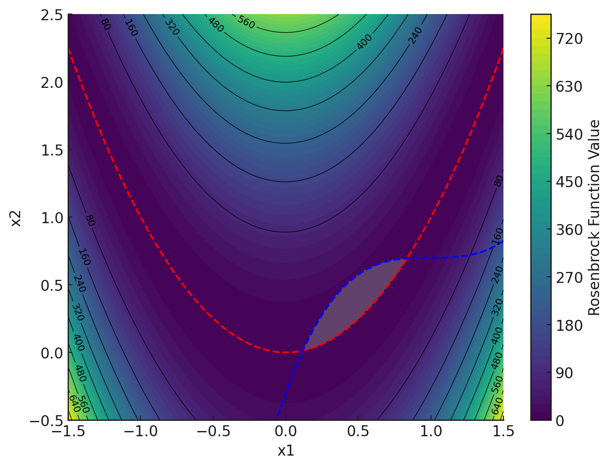

Description
In this turoial, the 2D Rosenbrock function is minimized with two external non-linear constraints. The optimization problem is:
$$\text{minimize}\quad f(x_1, x_2) = (1 - x_1)^2 + 100\,(x_2 - x_1^2)^2$$
$$\text{subject to}\quad x_2 - x_1^2 > 0,\quad (x_1 - 1)^3 - x_2 + 0.7 > 0,\\ -1.5 \le x_1 \le 1.5\;\;\text{and}\;\; -0.5 \le x_2 \le 2.5.$$
The contour plot below shows the objective function; the shaded region indicates the feasible region.
Preparing the xml configuration file
Before running the optimization, we need to prapare an xml file. Each optimization study is denoted by the <optimization_study> tag in the xml file.
Within this tag, we have a section where the general settings for the optimization study are specified. The parameters for this section are:
<name> <dimension> <number_of_function_evaluations>. This parameter specifies how many samples are allowed in the optimization process. <max_number_of_inner_iterations>. This parameter specifies the number of inner iterations used while maximizing the acqusition function. <number_of_threads>For our problem, the general settings section is:
<general_settings>
<name>ROSENBROCK</name>
<type>Optimization</type>
<dimension>2</dimension>
<number_of_function_evaluations>50</number_of_function_evaluations>
<max_number_of_inner_iterations>200000</max_number_of_inner_iterations>
<general_settings> The next step in the xml file is the section where optimization paramters are specified. This section is marked by the <optimization_parameters> tag.
Within this section an optimization parameters is specified using the ¶meter> tag. For our example, the first optimization parameter is given as
<parameter>
<name>x1</name>
<type>REAL</type>
<lower_bound>-1.5</lower_bound>
<upper_bound>1.5</upper_bound>
</parameter>
The lower and upper bounds of the variable is set using the <lower_bound> and <upper_bound> tags. The parameter is allowed be change continously during the optimization
so its type is set using the <type> tag.
Running the test case
Run the optimization from a terminal:
python runOptimization.pyThis generates optimizationHistory.csv, containing samples from the Design of Experiments (DoE) phase and the optimization iterations.
Plotting the results
Create the result plots with:
python plotResults.pyXML Input File
This XML file is the input configuration necessary for the optimization process. It must be prepared before running the optimization. It defines general settings, optimization parameters, the objective function, and constraints.
<optimization_study>
<general_settings>
<name>ROSENBROCK</name>
<type>Optimization</type>
<dimension>2</dimension>
<number_of_function_evaluations>50</number_of_function_evaluations>
<max_number_of_inner_iterations>200000</max_number_of_inner_iterations>
</general_settings>
<optimization_parameters>
<parameter>
<name>x1</name>
<type>REAL</type>
<lower_bound>-1.5</lower_bound>
<upper_bound>1.5</upper_bound>
</parameter>
<parameter>
<name>x2</name>
<type>REAL</type>
<lower_bound>-0.5</lower_bound>
<upper_bound>2.5</upper_bound>
</parameter>
</optimization_parameters>
<objective_function>
<name>RosenbrockFunction</name>
<executable_filename>calculateObjectiveFunction.py</executable_filename>
<output_filename>objectiveFunction.dat</output_filename>
<training_data_filename>Rosenbrock.csv</training_data_filename>
<design_vector_filename>dv.dat</design_vector_filename>
</objective_function>
<constraint_function>
<name>Constraint1</name>
<constraint_type>gt</constraint_type>
<constraint_value>0.0</constraint_value>
<executable_filename>constraint1.py</executable_filename>
<output_filename>constraint1.dat</output_filename>
<training_data_filename>constraint1.csv</training_data_filename>
<design_vector_filename>dv.dat</design_vector_filename>
</constraint_function>
<constraint_function>
<name>Constraint2</name>
<constraint_type>gt</constraint_type>
<constraint_value>0.0</constraint_value>
<executable_filename>constraint2.py</executable_filename>
<output_filename>constraint2.dat</output_filename>
<training_data_filename>constraint2.csv</training_data_filename>
<design_vector_filename>dv.dat</design_vector_filename>
</constraint_function>
</optimization_study>